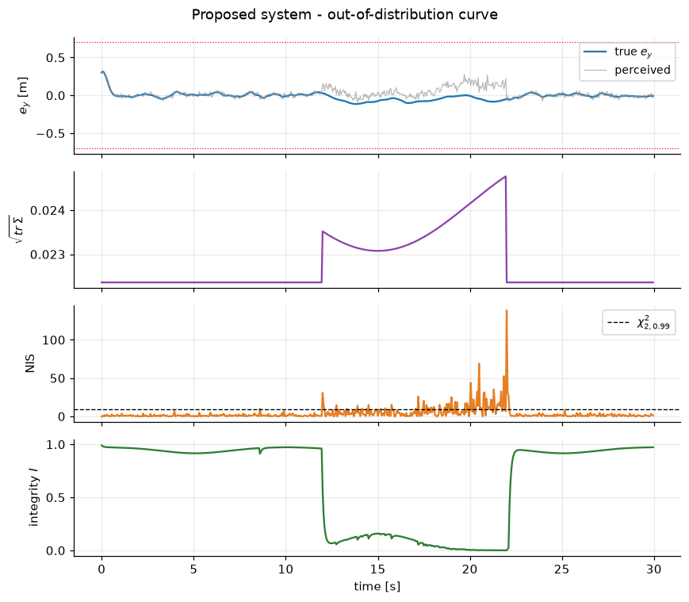
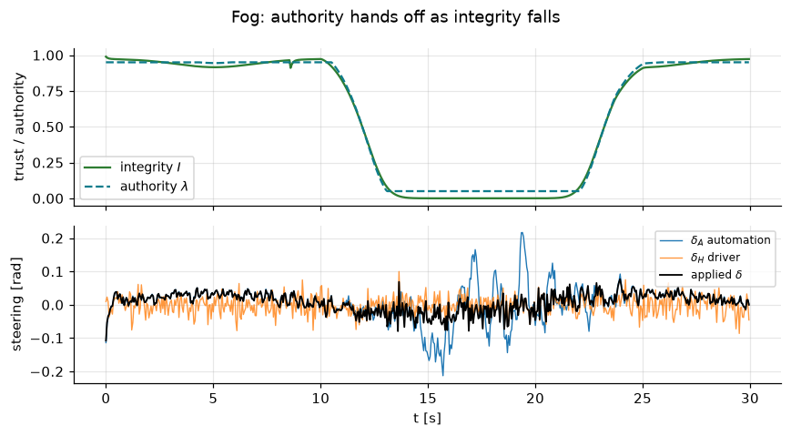

Goal. Assemble every component into one closed loop and evaluate it as a small
experiment: a controlled ablation across three architectures and four scenarios,
with per-scenario mechanism analysis, multi-seed statistics, a component ablation,
and an honest account of the limitations.
We use courselib, the consolidated library that mirrors what notebooks 01-07 built.
This notebook imports courselib, the course's reference library. Download the full course to run it.
The assembled system
The full closed loop chains every component built in notebooks 01-07: perception feeds
three monitors, their scores fuse into one integrity number, and that number sets the
shared authority and the speed. The block diagram shows the data flow (the numbers in
parentheses are the notebooks).
Three architectures use this same machinery differently:
naive - perception -> LQR, full automation, no monitoring;
hard handover - switch fully to the driver when the reported uncertainty\mathrm{tr}\,\Sigma^{AI} crosses a threshold;
proposed - filter the estimate, fuse the integrity score, share authority
smoothly and contract speed.
1. Methodology
Controlled comparison. For a given seed the plant, perception noise, driver and
scenario are identical across the three methods; only the use of the perception
output differs. Any difference in outcome is therefore attributable to the
monitoring-and-arbitration layer, not to luck.
Scenarios map to failure modes: nominal (in-domain), fog (visible
degradation - blur/darkness/occlusion), ood_curve (an out-of-distribution regime
that still looks like a valid image), conflict (an overloaded driver fighting the
automation).
Metrics. RMSE and max of the lateral error e_y; number of lane exits
(|e_y|>0.7 m); steering jerk (\sum_k|\Delta\delta_k|, ride quality);
unsafe-AI-usage = fraction of time the automation is trusted (\lambda>0.5)
while the vehicle is outside the ODD (the safety-critical figure).
Statistics. Because the comparison is paired (same seeds), we report the mean
over seeds and put a bootstrap 95% confidence interval [1] on the paired
difference between methods; an interval excluding zero is a reliable improvement.
import sys; sys.path.append("..")
import numpy as np
from courselib import (build_scenario, run_episode, metrics, METHODS, SCENARIOS,
use_course_style, trust_panel, METHOD_COLORS)
use_course_style()
rows = []
for sc in SCENARIOS:
fr = build_scenario(sc, T=30.0)
for m in METHODS:
me = metrics(run_episode(m, fr, seed=0))
rows.append((sc, m, me["RMSE_ey"], me["lane_exits"], me["steering_jerk"], me["unsafe_ai_usage_pct"]))
print("%-10s %-9s %7s %6s %8s %9s" % ("scenario", "method", "RMSE", "exits", "jerk", "unsafe%"))
for r in rows:
print("%-10s %-9s %7.3f %6d %8.2f %9.1f" % r)
The aggregate numbers hide why each method behaves as it does. Two figures make it
concrete.
Out-of-distribution curve (the decisive case). The reported uncertainty barely
moves, so the hard-handover threshold never trips - it is identical to naive. The
model-based checks are what react: the NIS spikes and the ODD margin on the
(map-provided) curvature falls, together collapsing the integrity score and shifting
authority.
import matplotlib.pyplot as plt
log = run_episode("proposed", build_scenario("ood_curve", T=30.0), seed=0)
trust_panel(log, "Proposed system - out-of-distribution curve"); plt.show()

# Fog: the uncertainty rises, integrity falls, and authority hands off smoothly
from courselib import CHI2_2DOF
log = run_episode("proposed", build_scenario("fog", T=30.0), seed=0)
t = log["t"]
fig, ax = plt.subplots(2, 1, figsize=(8, 4.4), sharex=True)
ax[0].plot(t, log["integrity"], color=METHOD_COLORS["proposed"], label="integrity $I$")
ax[0].plot(t, log["lambda"], color="#0e7c8b", ls="--", label="authority $\\lambda$")
ax[0].set_ylabel("trust / authority"); ax[0].legend(loc="lower left"); ax[0].set_ylim(-.05, 1.05)
ax[1].plot(t, log["delta_auto"], label="$\\delta_A$ automation", lw=.9)
ax[1].plot(t, log["delta_human"], label="$\\delta_H$ driver", lw=.9, alpha=.8)
ax[1].plot(t, log["delta"], 'k', lw=1.2, label="applied $\\delta$")
ax[1].set_ylabel("steering [rad]"); ax[1].set_xlabel("t [s]"); ax[1].legend(loc="upper right", fontsize=8)
for a in ax: a.grid(alpha=.3)
fig.suptitle("Fog: authority hands off as integrity falls"); plt.tight_layout(); plt.show()

In fog the perception uncertainty genuinely rises, so integrity falls and authority
transfers to the driver smoothly while the automation's noisy command is
de-weighted. In conflict, by contrast, perception is fine, so integrity stays high,
authority stays with the automation, and the overloaded/mistaken driver is correctly
out-voted (notebook 07). Different mechanism, same principle: authority follows
integrity.
3. Is the improvement statistically real?
One seed could be a fluke. We repeat every method on 20 seeds per scenario, report
the mean RMSE, and bootstrap a 95% confidence interval on the paired difference
(proposed minus baseline), aggregated over the two degraded scenarios where it should
matter.
seeds = range(20)
rmse = {m: {sc: [] for sc in SCENARIOS} for m in METHODS}
unsafe = {m: {sc: [] for sc in SCENARIOS} for m in METHODS}
for sc in SCENARIOS:
for s in seeds:
fr = build_scenario(sc, T=30.0)
for m in METHODS:
me = metrics(run_episode(m, fr, seed=s))
rmse[m][sc].append(me["RMSE_ey"]); unsafe[m][sc].append(me["unsafe_ai_usage_pct"])
print("mean RMSE e_y (+/- std) over 20 seeds")
print("%-10s %14s %14s %14s" % ("scenario", "naive", "handover", "proposed"))
for sc in SCENARIOS:
cells = []
for m in METHODS:
a = np.array(rmse[m][sc]); cells.append("%.3f+/-%.3f" % (a.mean(), a.std()))
print("%-10s %14s %14s %14s" % (sc, *cells))
def boot_ci(d, n=20000, seed=0):
r = np.random.default_rng(seed); idx = r.integers(0, len(d), (n, len(d)))
m = d[idx].mean(1); return d.mean(), np.percentile(m, 2.5), np.percentile(m, 97.5)
deg = ["fog", "ood_curve"]
d_naive = np.array([rmse["proposed"][sc][i] - rmse["naive"][sc][i] for sc in deg for i in range(len(seeds))])
d_hand = np.array([rmse["proposed"][sc][i] - rmse["handover"][sc][i] for sc in deg for i in range(len(seeds))])
for name, d in [("proposed - naive", d_naive), ("proposed - handover", d_hand)]:
m, lo, hi = boot_ci(d)
sig = "significant" if hi < 0 else "not significant"
print("\n%-20s mean dRMSE = %+.3f m 95%% CI [%+.3f, %+.3f] -> %s" % (name, m, lo, hi, sig))
mean RMSE e_y (+/- std) over 20 seeds
scenario naive handover proposed
nominal 0.034+/-0.001 0.034+/-0.001 0.035+/-0.001
fog 0.242+/-0.049 0.170+/-0.019 0.043+/-0.003
ood_curve 0.193+/-0.004 0.193+/-0.004 0.052+/-0.006
conflict 0.034+/-0.001 0.034+/-0.001 0.036+/-0.001
proposed - naive mean dRMSE = -0.170 m 95% CI [-0.185, -0.157] -> significant
proposed - handover mean dRMSE = -0.134 m 95% CI [-0.139, -0.129] -> significant
4. Component ablation: what is each part doing?
To show that the integrity score's parts earn their place, we rebuild the closed
loop directly from the library with switches, and turn components off one at a time.
The test bed is the out-of-distribution curve, where the failure is subtle.
from courselib import (Vehicle, VehicleParams, LQRController, SharedController,
SharedControlParams, SyntheticPerception, KalmanMonitor,
ODD, IntegrityMonitor, SimulatedDriver)
def run_cfg(frames, use_nis=True, use_odd=True, filt=True, speed=True, seed=0):
vp = VehicleParams(); veh = Vehicle(vp, x0=(0.3, 0.02))
per = SyntheticPerception(seed=seed); lqr = LQRController(veh)
shared = SharedController(SharedControlParams(v_nom=vp.v)); drv = SimulatedDriver(seed=seed+1)
odd = ODD(); integ = IntegrityMonitor(odd)
A, B, E = veh.linear_model(); kf = KalmanMonitor(A, B, E, np.diag([1e-4, 1e-4]), P0=np.diag([0.05, 0.02]))
kf.x = np.array([0.3, 0.02]); prev = 0.0
ey, lam_log, out = [], [], []
for fr in frames:
true = veh.x.copy()
po = per.measure(true, fr.kappa, fr.cond); y, R = po["mean"], po["cov"]
kf.predict(prev, fr.kappa); nis = kf.update(y, R)
nis_u = nis if use_nis else 0.0
b, bl, oc = (fr.cond.brightness, fr.cond.blur, fr.cond.occlusion) if use_odd else (1.0, 0.0, 0.0)
kap = fr.kappa if use_odd else 0.0
I, _ = integ.update(po["trace"], nis_u, kap, b, bl, oc)
xhat = kf.x.copy() if filt else y
vcmd = shared.reference_speed(I) if speed else vp.v
ff = lqr.feedforward(fr.kappa); fb = lqr.feedback(xhat, v=vcmd)
dh = drv.command(true, fr.workload, fr.available, fr.conflict)
delta, lam, vref = shared.arbitrate(fb, dh, ff, I, fr.workload, fr.available)
delta = float(np.clip(delta, -vp.delta_max, vp.delta_max))
veh.step(delta, fr.kappa, v=vref); prev = delta
ey.append(true[0]); lam_log.append(lam)
out.append(odd.inside(fr.kappa, fr.cond.brightness, fr.cond.blur, fr.cond.occlusion))
ey = np.array(ey); lam_log = np.array(lam_log); inside = np.array(out)
return {"RMSE": float(np.sqrt(np.mean(ey**2))),
"unsafe%": 100*float(np.mean((lam_log > 0.5) & ~inside))}
fr = build_scenario("ood_curve", T=30.0)
configs = [("full proposed", dict()),
("no speed contraction", dict(speed=False)),
("no NIS (ODD still on)", dict(use_nis=False)),
("no ODD (NIS still on)", dict(use_odd=False)),
("uncertainty only (no NIS+ODD)", dict(use_nis=False, use_odd=False))]
print("%-30s %8s %9s" % ("configuration", "RMSE", "unsafe%"))
for name, kw in configs:
r = run_cfg(fr, **kw); print("%-30s %8.3f %9.1f" % (name, r["RMSE"], r["unsafe%"]))
configuration RMSE unsafe%
full proposed 0.052 0.2
no speed contraction 0.051 0.2
no NIS (ODD still on) 0.053 0.2
no ODD (NIS still on) 0.170 30.2
uncertainty only (no NIS+ODD) 0.192 33.3
The ablation is precise about each part. Removing the speed contraction costs only
a little tracking - it shrinks the operating envelope, it does not detect anything.
Removing the NIS while keeping the ODD barely hurts here, because the
out-of-distribution curve is a monitored condition: with map-provided curvature the
ODD margin falls in a sustained way and holds integrity down on its own.
Removing the ODD while keeping the NIS hurts more - but not because the NIS is
blind. It clearly sees the inconsistency (over the OOD window its NIS averages about
9 and spikes above 100), yet as an instantaneous soft score, under a bias the filter
partially tracks, it crosses the threshold only intermittently (~30% of samples). On
its own that does not keep integrity low. This is exactly why a cumulative test
(CUSUM, notebook 09) is the right way to turn the NIS into a robust standalone
trigger, and why fusing it with the ODD is valuable in the meantime.
Removing both - leaving only the perception's self-reported uncertainty -
collapses the integrity signal entirely: the automation stays trusted while outside
the ODD, and the method degrades to naive. This is the same failure that sinks the
hard-handover baseline (which also relies on reported uncertainty), and it is the
quantitative statement of the course's thesis: self-reported uncertainty is not
enough; you need at least one external, model- or domain-based check - and, for the
intermittent ones, a cumulative test to make the trigger robust.
5. Limitations and threats to validity
An honest capstone states where the demonstrator is simplified:
Perception is synthetic. We emulate a learned sensor analytically rather than
training a network on real images. The main project shows the CNN drop-in; the
qualitative conclusions (uncertainty flat but NIS spiking OOD) should be revalidated
on a real network and dataset.
Kinematic plant. No tyre slip, actuator lag, or longitudinal dynamics. Near the
0.9 g of the OOD curve (notebook 01) a dynamic model would matter.
Simple driver. A delayed proportional model is a caricature of a human; real
takeover behaviour, distraction and trust dynamics are richer (notebook 07).
Tuning. The score maps, thresholds and gains are hand-set, not learned or
certified; the ODD box is a coarse proxy. Results are internally consistent but not
a safety case.
Scope. One vehicle, lateral control only, short episodes, and the integrity
score is a heuristic, not a guaranteed bound.
These are exactly the openings notebook 09 turns into research directions.
6. What you built
From first principles you assembled a small but complete trustworthy-autonomy stack:
a vehicle model, an optimal controller, a perception front-end with calibrated
uncertainty, a model-based consistency monitor, a fused integrity score, and an
integrity-aware shared controller - and you showed, with a controlled and
statistically-checked experiment, that using perception through that monitoring
layer is safer than trusting it or switching away from it. Notebook 09 explores how
to make each piece stronger.
Exercises
Add max|e_y| and the authority split to the 20-seed study and bootstrap their CIs.
Extend the ablation to fog: which component matters there, and does the
redundancy story change (NIS is quiet under honest-noise blur)?
Replace the bootstrap with a paired Wilcoxon signed-rank test [2] and compare the
conclusions.
Vary the hard-handover threshold over a wide range and show that no setting makes
it competitive on ood_curve - the reported uncertainty simply never crosses.
References
B. Efron, R. J. Tibshirani. An Introduction to the Bootstrap. Chapman & Hall/CRC, 1993.
F. Wilcoxon. Individual Comparisons by Ranking Methods. Biometrics Bulletin, 1(6):80-83, 1945. doi:10.2307/3001968
J. Demsar. Statistical Comparisons of Classifiers over Multiple Data Sets. Journal of Machine Learning Research, 7:1-30, 2006.
P. Antonante, H. Nilsen, L. Carlone. Monitoring of Perception Systems. Artificial Intelligence, 2022. arXiv:2205.10906
T. Charmet, V. Berge-Cherfaoui, J. Guzman, A. Armand. Operational Design Domain Monitoring with Uncertain Measurements. IEEE ITSC, 2024. doi:10.1109/ITSC58415.2024.10919733
SAE International. Taxonomy and Definitions for Terms Related to Driving Automation Systems. Standard J3016_202104, 2021.